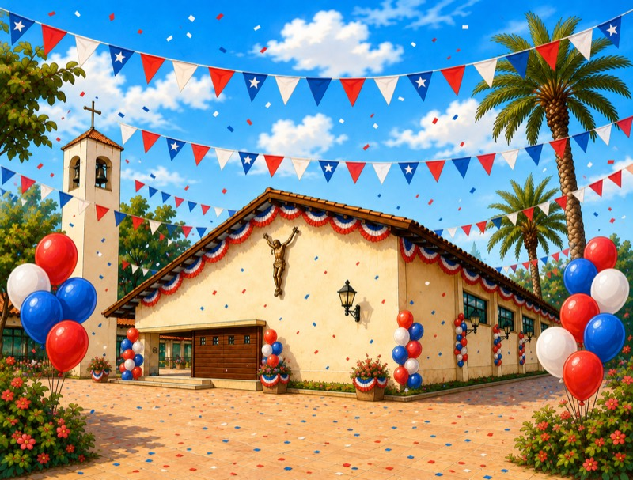

¡Celebremos nuestra kermés parroquial!
Te invitamos a compartir en familia en la Parroquia Nuestra Señora de Lourdes. Comenzaremos a las 11:00 con la misa a la chilena y a las 12:00 inauguraremos la kermés. Tendremos comidas típicas, bingo, bailes, juegos y mucho más. ¡Ven a disfrutar y celebrar junto a nuestra comunidad!
Av. Balmaceda 1596, La Serena